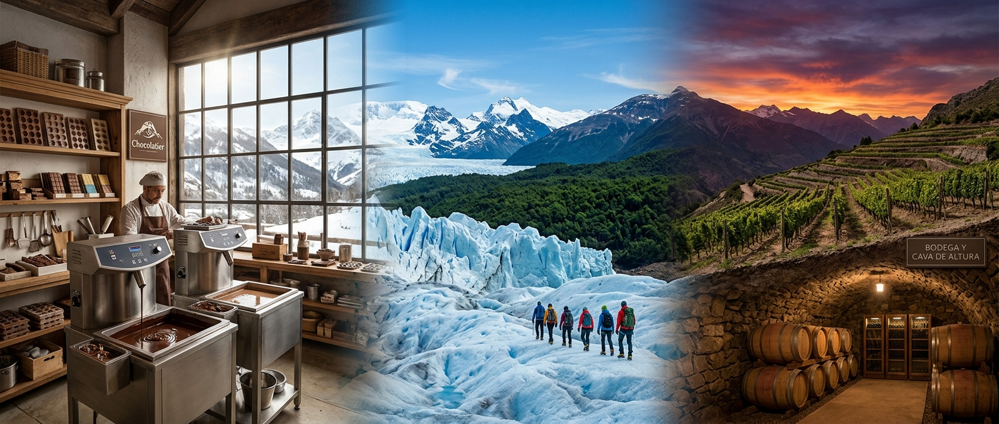
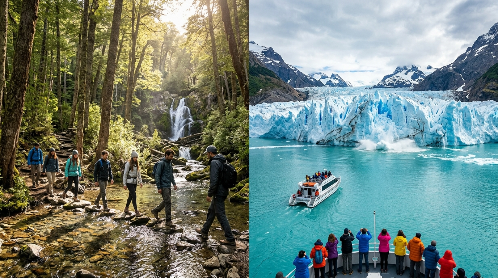

Lugares de Interés y Atractivos
Paseo Artesanal y Fábrica "El Tronco de Cacao"
Reserva Natural y Glaciar Ventisquero Blanco
Bodega de Altura y Viñedos "Sombra de Nieve"
Descripción: La fábrica más antigua y famosa del país. Cuenta con un museo interactivo del chocolate y ventanales acristalados para observar la producción en tiempo real.
Ubicación: Distrito del Cacao, Av. Los Alerces 450.
¿Qué hacer?: Talleres de moldeado de chocolate para niños y adultos, cata a ciegas de variedades con porcentajes de cacao del 30% al 90%, y degustación gratuita en la tienda.
¿Por qué visitarlo?: Es la cuna donde se inventó la receta tradicional del chocolate en rama nevispino.
Descripción: Imponente masa helada rodeada por un bosque andino patagónico primario con fauna protegida como huemules y zorros colorados.
Ubicación: A 15 km del Barrio Histórico El Robledal (Acceso por Ruta Provincial Ficticia 88).
¿Qué hacer?: Trekking sobre hielo con grampones, caminatas de interpretación de flora autóctona, y fotogalería al aire libre.
¿Por qué visitarlo?: Es uno de los pocos glaciares en retroceso controlado de fácil acceso para toda la familia.
Descripción: Una de las pocas bodegas australes especializadas en vinos de clima extremo (Pinot Noir y Chardonnay) criada en barricas en cavas subterráneas de piedra.
Ubicación: Caminito del Faldeo S/N, Barrio Villa Los Arrayanes.
¿Qué hacer?: Maridaje guiado de vinos patagónicos con chocolates artesanales amargos y quesos ahumados de la zona.
¿Por qué visitarlo?: Ofrece una experiencia sensorial única que combina la acidez de los vinos de frío con el dulzor del cacao local.

Gastronomía Típica y Recomendaciones
- Guiso Cordillerano de Ciervo y Hongos del Bosque: Estofado lento en olla de hierro fundido con vino tinto local.
- Trucha Arcoíris a la Manteca de Cacao: Salteada con especias nativas y servida con puré ahumado de papas andinas.
- Fondues de Chocolate en Rama: Plato dulce insignia servido con frutas cordilleranas frescas (frambuesas, calafates y moras).
![Gastronomía de la Patagonia Argentina. Una mesa rústica de madera con un gran caldero de hierro lleno de venado a la cordillera al costado izquierdo, un plato azul con trucha a la manteca y puré de papas al centro derecho, y una taza de chocolate caliente con bayas y frutos rojos en la parte inferior central. El entorno es un salón acogedor con paredes de madera, chimenea de piedra y luz natural suave. En la imagen aparecen los textos Gastronomía de la Patagonia Argentina, Venado de la Cordillera, Trucha de los Lagos y Chocolate de Bariloche, junto con descripciones de cada plato. La sensación general es cálida, tradicional y muy invitante.](img/lugares/gastronomia.png)
Excursiones Imperdibles
- Excursión 1: Senderismo Transandino por el Bosque de Coihues: Caminata de 4 horas de dificultad media que atraviesa arroyos descongelados hasta llegar a la cascada escondida "El Velo de la Nieves".
- Excursión 2: Navegación y Visita al Glaciar Ventisquero Blanco: Excursión lacustre de medio día que acerca a los visitantes a solo 100 metros de las paredes heladas del glaciar con desprendimientos en vivo.
